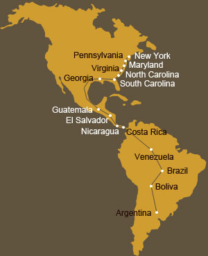

 Virginia and Maryland
Virginia and Maryland
 Off course we were sad to say goodbye to our friends in North Carolina but New York was calling and we didn’t have much time to linger. Our first stop in Clarksville with not much organised in the sense of accommodation for that night, almost proved to be eventful with an unfriendly man who crossed our paths with no intention of helping out. But fortunately every dark cloud has that silver lining and at least we managed to find a little spot for ourselves for the evening with Bruce and his family.
Off course we were sad to say goodbye to our friends in North Carolina but New York was calling and we didn’t have much time to linger. Our first stop in Clarksville with not much organised in the sense of accommodation for that night, almost proved to be eventful with an unfriendly man who crossed our paths with no intention of helping out. But fortunately every dark cloud has that silver lining and at least we managed to find a little spot for ourselves for the evening with Bruce and his family.
 Dean (he is a farrier and swiftly gave me new back shoes), Megan, Joyce and Bill made sure that we were comfortable during our stay near Chase city and although a misunderstanding almost had us on the streets the following night, we had a amusing and interesting stay at the house of Pat and
Dean (he is a farrier and swiftly gave me new back shoes), Megan, Joyce and Bill made sure that we were comfortable during our stay near Chase city and although a misunderstanding almost had us on the streets the following night, we had a amusing and interesting stay at the house of Pat and  Mackey. The duo farrier couple who has their own business, K Bar R Rand and Farrier Service, called Rick and Kelly put us up on their farm near Burkeville and kindly offered to give Camanchi a new set of back shoes. Judging by the amount of well-cared animals they have, I knew we were going to be in good hands. Check out their website on
Mackey. The duo farrier couple who has their own business, K Bar R Rand and Farrier Service, called Rick and Kelly put us up on their farm near Burkeville and kindly offered to give Camanchi a new set of back shoes. Judging by the amount of well-cared animals they have, I knew we were going to be in good hands. Check out their website on
 The road to our next stop was quite narrow in parts and more than once did we have big trucks rushing pass us at arms-length away. Walter, Elizabeth and Elisa were our hosts next and we had a lovely two-day stay at Wigwam stables, a beautiful farm with colonial house, stables and big surrounding fields. The next day Elizabeth and Miss M went to visit a riding facility for disabled kids but due to the weather, the class took place
The road to our next stop was quite narrow in parts and more than once did we have big trucks rushing pass us at arms-length away. Walter, Elizabeth and Elisa were our hosts next and we had a lovely two-day stay at Wigwam stables, a beautiful farm with colonial house, stables and big surrounding fields. The next day Elizabeth and Miss M went to visit a riding facility for disabled kids but due to the weather, the class took place  indoors – with fake horses and equipment off course! We are also very grateful to Linda, the head-master of the local school in Powhatan for volunteering to make a donation towards TATA. It was also here where we stayed for our next night with Lani and Dana…we were well catered for and Miss M told us the next day about the lovely dinner that Dana cooked. Oh, I am sure those hungry days in Latin America seems a life-time away…
indoors – with fake horses and equipment off course! We are also very grateful to Linda, the head-master of the local school in Powhatan for volunteering to make a donation towards TATA. It was also here where we stayed for our next night with Lani and Dana…we were well catered for and Miss M told us the next day about the lovely dinner that Dana cooked. Oh, I am sure those hungry days in Latin America seems a life-time away…
 Our arrival in Cuckoo at the house of Melissa was met by many enthusiastic family members and friends. Melissa and her family could not do enough for Miss M and us and the two nights we stayed at their big house filled with pets and people were truly memorable. Melissa also called out Harold Plastered, a certified journeyman farrier who looked at my feet and decided that I needed a fresh pair of shoes. He did these using
Our arrival in Cuckoo at the house of Melissa was met by many enthusiastic family members and friends. Melissa and her family could not do enough for Miss M and us and the two nights we stayed at their big house filled with pets and people were truly memorable. Melissa also called out Harold Plastered, a certified journeyman farrier who looked at my feet and decided that I needed a fresh pair of shoes. He did these using  the hot-shoeing and when he saw Miss M’s worried face, he quickly explained the advantages of this method. He certainly knew what he was doing and finished the job in jig time. We are also delighted to have met Kim in Rhoadesville and her very kind friend Patrece who came out the next day while we were on the road to make sure Miss M is warm enough and has food for the road. She also escorted us the last bit into Culpeper, driving behind us and making sure that the cars and trucks slowed down. Thanks Patrece!!! In Culpeper it was Gail and Ken (they have lovely horses amongst them Tenessee Walkers)who put us up for two nights and their friend Sharon also was there to give a helping hand, particularly the next day to bring us around the busy city of Culpeper.
the hot-shoeing and when he saw Miss M’s worried face, he quickly explained the advantages of this method. He certainly knew what he was doing and finished the job in jig time. We are also delighted to have met Kim in Rhoadesville and her very kind friend Patrece who came out the next day while we were on the road to make sure Miss M is warm enough and has food for the road. She also escorted us the last bit into Culpeper, driving behind us and making sure that the cars and trucks slowed down. Thanks Patrece!!! In Culpeper it was Gail and Ken (they have lovely horses amongst them Tenessee Walkers)who put us up for two nights and their friend Sharon also was there to give a helping hand, particularly the next day to bring us around the busy city of Culpeper.
 The road to Warrenton was very scenic and here we were met by the very friendly and hospitable Amy and Glenn. They organised a little gathering that evening in the local Irish pub, Molly’s and Miss M told us about all the nice people she met…amongst them Peter and Barbara who have strong links with
The road to Warrenton was very scenic and here we were met by the very friendly and hospitable Amy and Glenn. They organised a little gathering that evening in the local Irish pub, Molly’s and Miss M told us about all the nice people she met…amongst them Peter and Barbara who have strong links with Africa and particular Kenya. Our next day to Middelburg brought its own share of excitement, strange calls and strange human beings with strange agendas (more about this in Miss M’s book!) but all I will say is that we were very lucky to have had so many decent people there who really care. Miss M surely will be always grateful to Glenn who selflessly did so much for her, Peter and Barbara who opened their house and treated Miss M like their own daughter and Patty from Gypsy Stables who treated Camanchi and I like we were her own…thank you so much!
Africa and particular Kenya. Our next day to Middelburg brought its own share of excitement, strange calls and strange human beings with strange agendas (more about this in Miss M’s book!) but all I will say is that we were very lucky to have had so many decent people there who really care. Miss M surely will be always grateful to Glenn who selflessly did so much for her, Peter and Barbara who opened their house and treated Miss M like their own daughter and Patty from Gypsy Stables who treated Camanchi and I like we were her own…thank you so much!
 In Maryland our first contact was with Mary and Dante, They are a lovely couple who play professional polo and our little break with them was indeed a much needed time for chilling and reflecting. Thanks to all for their kind understanding and empathy. We also met
In Maryland our first contact was with Mary and Dante, They are a lovely couple who play professional polo and our little break with them was indeed a much needed time for chilling and reflecting. Thanks to all for their kind understanding and empathy. We also met  Joe and Alyse and in an interesting twist of events, they stayed part of our trip even after we had finished…but more about this later.
Joe and Alyse and in an interesting twist of events, they stayed part of our trip even after we had finished…but more about this later.
 Onwards it was Christie and Jim who looked after us terribly well and that evening Miss M also met some of there 5 sons…friendly, decent lads. The next morning Miss M was invited to witness a “breeding session” between stallion and mare and by the look of amazement on her face, we think it was a first for her!
Onwards it was Christie and Jim who looked after us terribly well and that evening Miss M also met some of there 5 sons…friendly, decent lads. The next morning Miss M was invited to witness a “breeding session” between stallion and mare and by the look of amazement on her face, we think it was a first for her! The road to Monkton was quite spectacular, passing beautiful farms with curious horses running up the fields when they spotted us, little winding roads and pretty trees. The last few miles to our destination happened in peak traffic and we were lucky to have had the help from a stranger who with her daughter, drove behind us in their vehicle,
The road to Monkton was quite spectacular, passing beautiful farms with curious horses running up the fields when they spotted us, little winding roads and pretty trees. The last few miles to our destination happened in peak traffic and we were lucky to have had the help from a stranger who with her daughter, drove behind us in their vehicle,  forcing cars to go slower until we reached the stately house of Mrs Ellie, safe and sound. We were put in lovely stables and fed some grains and hay. Miss M stayed with Mrs Ellie in her big house and the next day she couldn’t talk enough about this energetic, colourful and generous lady who at the age of 72 still goes foxhunting!
forcing cars to go slower until we reached the stately house of Mrs Ellie, safe and sound. We were put in lovely stables and fed some grains and hay. Miss M stayed with Mrs Ellie in her big house and the next day she couldn’t talk enough about this energetic, colourful and generous lady who at the age of 72 still goes foxhunting! We also want to give a heartfelt thanks to the Bonaface family for putting us up and for showing Miss M around their well-organised and efficient horse-racing farm. Also to the hospitable Louisa in Fair Hill who at very short notice put us all up as well as a visitor from Ohio. Her name
We also want to give a heartfelt thanks to the Bonaface family for putting us up and for showing Miss M around their well-organised and efficient horse-racing farm. Also to the hospitable Louisa in Fair Hill who at very short notice put us all up as well as a visitor from Ohio. Her name  was Joy, a lovely, serene lady who travelled for hours to be able to spend some time with Miss M and us, taking pictures and getting a feel for our journey…the pictures she took are fantastic and this was presented to Miss M in a lovely leather-bound album. Thanks Joy! Joy also stayed part of TATA well after we finished…but more about this from Mise.
was Joy, a lovely, serene lady who travelled for hours to be able to spend some time with Miss M and us, taking pictures and getting a feel for our journey…the pictures she took are fantastic and this was presented to Miss M in a lovely leather-bound album. Thanks Joy! Joy also stayed part of TATA well after we finished…but more about this from Mise.